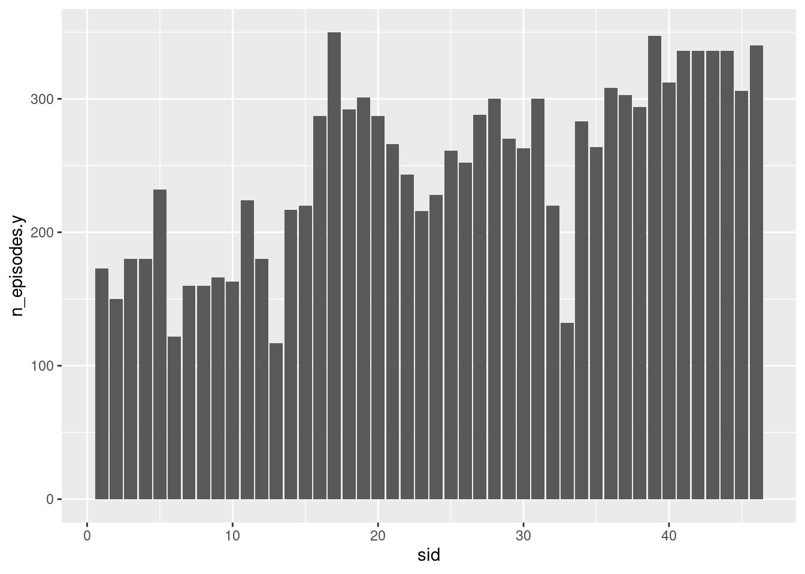
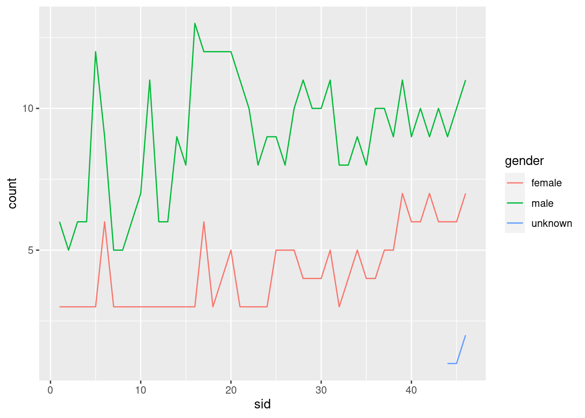

library(tidyverse)
library(ggplot2)
library(lubridate)
knitr::opts_chunk$set(echo = TRUE, warning=FALSE, message=FALSE)Challenge 8
challenge_8
railroads
snl
faostat
debt
Joining Data
Read in data
actors <- read_csv('_data/snl_actors.csv')
casts <- read_csv('_data/snl_casts.csv')
seasons <- read_csv('_data/snl_seasons.csv')
view(actors)
view(casts)
view(seasons)Briefly describe the data
This data set contains three tables - actors, casts, and seasons of Saturday Night Live show. The actors table contains actors name, type (cast/guest), gender. The casts table contains name, season id, and other information. The seasons table contains season Id, year, and number of episodes. There are a total of 46 seasons from 1975 to 2020.
Join Data
We can first join two tables - casts and seasons by sid. The new table contains information about sid, year, no.of episodes (per season), and number of episodes for each cast member in a season. We can then plot a graph for season number against number of episodes for cast member.
data <- left_join(seasons, casts, by = "sid" )
data# A tibble: 614 × 12
sid year first_epi…¹ last_…² n_epi…³ aid featu…⁴ first…⁵ last_…⁶ updat…⁷
<dbl> <dbl> <dbl> <dbl> <dbl> <chr> <lgl> <dbl> <dbl> <lgl>
1 1 1975 19751011 1.98e7 24 Gild… FALSE NA NA FALSE
2 1 1975 19751011 1.98e7 24 Mich… FALSE NA 1.98e7 FALSE
3 1 1975 19751011 1.98e7 24 Lara… FALSE NA NA FALSE
4 1 1975 19751011 1.98e7 24 Garr… FALSE NA NA FALSE
5 1 1975 19751011 1.98e7 24 Jane… FALSE NA NA FALSE
6 1 1975 19751011 1.98e7 24 Geor… FALSE NA 1.98e7 FALSE
7 1 1975 19751011 1.98e7 24 Chev… FALSE NA NA TRUE
8 1 1975 19751011 1.98e7 24 John… FALSE NA NA FALSE
9 1 1975 19751011 1.98e7 24 Dan … FALSE NA NA FALSE
10 2 1976 19760918 1.98e7 22 Gild… FALSE NA NA FALSE
# … with 604 more rows, 2 more variables: n_episodes.y <dbl>,
# season_fraction <dbl>, and abbreviated variable names ¹first_epid.x,
# ²last_epid.x, ³n_episodes.x, ⁴featured, ⁵first_epid.y, ⁶last_epid.y,
# ⁷update_anchor data %>%
ggplot(aes(x = sid, y = n_episodes.y)) +
geom_bar(stat = "identity") 
For another plot, we can then merge actors and casts by aid. This table can later be joined with seasons table by sid. Below, we plot another graph to depict the number of male and female in each season of SNL.
actors_casts <- merge(actors, casts, by = 'aid')actors_casts_gender <- actors_casts %>%
merge(seasons, by = 'sid') %>%
group_by(sid, year, gender) %>%
count(sid, gender)actors_casts_gender %>%
ggplot(aes(sid, n, col = gender)) +
geom_line() +
ylab("count")